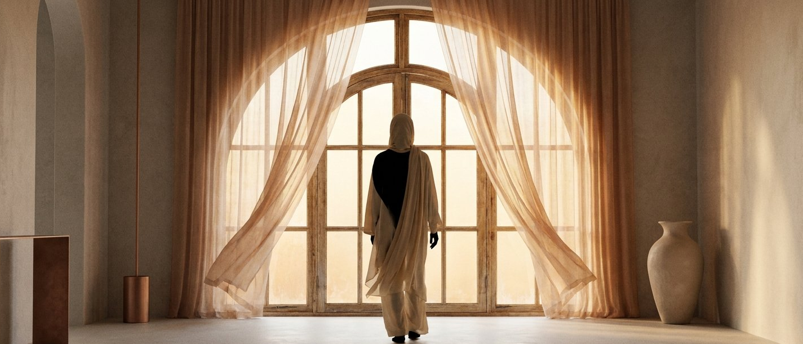

Femmes célibataires
En quête de construction intérieure et d'alignement avant un engagement.
Un espace pour se recentrer, s'aligner et se renforcer avant de dire oui à une nouvelle vie.
Découvrir le programmeBeaucoup de femmes entrent dans le mariage sans avoir pris le temps de se construire intérieurement. Ce chemin existe pour relier ton être à ce que tu es vraiment.

Je suis Djene — coach spirituelle pour les femmes en quête de construction intérieure et d'alignement avant le mariage.
Mon parcours n'a pas été linéaire. Après plusieurs années d'assistanat, un sentiment me revenait sans cesse : l'insatisfaction. Je savais au fond de moi ce qui m'animait, mais le regard des autres et la peur de l'inconnu me freinaient.
En 2021, j'ai intégré une école de coaching. Très vite, j'ai compris que j'étais à ma place. Depuis toujours, les femmes autour de moi se tournent naturellement vers moi pour du soutien, une écoute sincère, parfois une vérité difficile à entendre.
Aider les autres fait partie de ma nature. Aujourd'hui, je le fais en restant alignée avec ma foi et mes valeurs — c'est pour cela que j'ai créé Djene Signature.
Le coaching, c'est un suivi profond : t'aider à surmonter les obstacles, optimiser tes forces, développer tes compétences.
Le coach n'apporte pas les réponses — il aide la coachée à les faire émerger.
Le coaching spirituel peut être lié ou non à la religion. Il s'appuie avant tout sur une quête de sens, d'alignement et d'épanouissement.
Je crois profondément que Dieu nous a placés sur cette terre avec une mission. C'est ce qui guide chacune de mes séances.
Cet accompagnement est pensé pour les femmes qui veulent se construire avant de s'engager — et pour celles qui cherchent à mieux se comprendre.
En quête de construction intérieure et d'alignement avant un engagement.
Se préparer à dire oui de manière consciente, posée, alignée.
Recherche d'harmonie entre la foi, l'identité et les relations.
Avant de s'engager, prendre le temps d'apprendre qui l'on est vraiment.
Quatre piliers qui structurent chaque séance et chaque accompagnement.
Un accompagnement basé sur la conscience de soi et l'alignement intérieur.
Un travail concret sur ton identité, tes émotions et tes intentions profondes.
Une approche profonde, adaptée à ton parcours, ton vécu et tes besoins.
Un accompagnement porté par les principes de la foi musulmane.
Soi la femme de ta vie. Tu mérites d'être heureuse, n'est-ce pas ?
Intégrée au coaching, cette séance permet de lâcher prise et d'évacuer les tensions émotionnelles, mentales et physiques à travers un travail encadré sur pattes d'ours.
Passionnée de boxe depuis plus de dix ans, j'ai construit cet outil pour travailler le mindset, la gestion des émotions et le dépassement de soi — dans un cadre bienveillant et sécurisé.
Ce n'est pas un cours de boxe. C'est un outil d'expression et de libération émotionnelle.Réserver une séance défouloir
Tarif adapté selon ta situation socio-professionnelle.
Pour commencer le chemin avec un premier socle.
L'équilibre idéal pour amorcer un vrai changement.
Un parcours en profondeur, pensé pour aller au bout.
Un appel gratuit pour échanger sur ton chemin, comprendre où tu en es, et voir si l'accompagnement te correspond.
Réserver mon appel gratuit